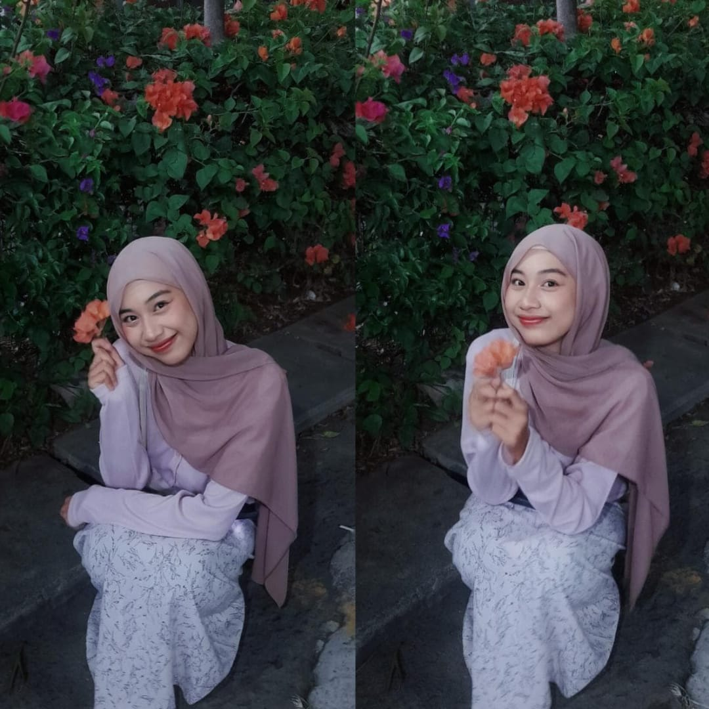

01
Bahagia
Semoga senyummu selalu terjaga dan ada banyak alasan baru untuk membuat harimu lebih berbahagia..

Untuk Alyaa
Nggak semewah hadiah yang pernah kamu kasih, tapi dibuat pelan-pelan dan sepenuh hati.
Ini Paling pas dibuka dengan suara pokoknya
Hari ini tentang kamu
Enam November — hari yang akan selalu aku ingat.
Satu hari, banyak doa baik
Ada orang yang hadir sebentar, tapi meninggalkan pelajaran yang bertahan lama.
Terima kasih pernah menjadi bagian dari perjalanan Panjang itu. Untuk setiap cerita, tawa, salah, benar, dan hal-hal kecil yang akhirnya membuat aku tumbuh jadi pribadi yang lebih baik. Semoga hidupmu penuh kebahagiaan dan penuh cinta yang bermekaran
“Perempuan dengan bahu sekuat baja dan sabar seluas samudra.”
— dari seseorang yang masih mendoakanmu
Tiga hal untuk tahun yang baru
Bukan cuma hari ini—semoga doa-doa ini ikut menemani langkahmu setelahnya. Meskipun aku tak lagi ikut serta disampingmu, tapi aku akan selalu jadi orang yang bahagia melihat kabarmu.
Semoga senyummu selalu terjaga dan ada banyak alasan baru untuk membuat harimu lebih berbahagia..
Semoga harapan yang selama ini kamu simpan, pelan-pelan menemukan jalannya. Semoga badaimu cepat reda, semoga tamanmu kembali berbunga.
Semoga kamu selalu bertemu orang-orang baik dan tulus, semoga hal-hal yang membuat hati tenang sering bermunculan.
03 — sepucuk surat
Kalau sudah siap, baca pelan-pelan. Nggak perlu buru-buru sampai halaman terakhir.
Hai, Alya.
Alya, perempuan yang banyak memberi aku pelajaran berharga di hidup yang singkat ini. Dari apa yang salah dan apa yang benar. Dari hal-hal kecil yang mungkin dulu tidak aku sadari, sampai hal-hal yang akhirnya membuat aku menjadi pribadi yang lebih baik. Makasih ya udah jadi orang paling sabar selama masih menjadi "KITA".
Happy Birthday, Sayangg.
Hehehe, boleh lah sekali manggil sayang, sebelum tak lagi bisa. Surat ini aku tulis pada tanggal 11 November, pukul 23.41 WIB. Jujur, aku ngga tau nanti kado ini bisa sampai tepat pas hari ulang tahun kamu atau ndak, tapi akan ku usahakan. Kalau ternyata terlambat, maaf yaa. Tapi aku tetap berharap surat ini bisa sampai dan dibaca dengan senyuman. Maaf kalo aku seperti datang lagi dan mengganggu hidupmu, tenang aja. Semoga badaimu cepat berlalu ya, semoga tumbuh bunga disela retak retak rapuhmu,
Bertepatan pada tanggal 6 November, umur Alya bertambah satu tahun lagi, haii kepala dua. Semoga di umur yang baru ini segala hal baik ikut bertambah—kebahagiaan, kesehatan, rezeki, dan semoga segala harapan yang selama ini kamu simpan pelan-pelan bisa menjadi kenyataan.
Terima kasih pernah hadir dan jadi bagian dari hidup aku untuk menjadi lebih baik. Mungkin waktu membawa kita ke jalan yang berbeda, tapi kenangan dan pelajaran yang pernah ada tetap punya tempat tersendiri di dalam hidup amat. Aku senang akhir akhir ini lihat kabarmu, berkelana seperti ucapanmu, terakhir liat kamu yang kelembu/bongkok ya, yang bertiga itu, hehe. hati hati yaa.
Aku selalu berharap semoga Alyaa dikelilingi orang-orang baik, dipertemukan dengan hal-hal baik, dan dijauhkan dari segala hal yang bisa membuat Alyaa sedih, tanpa terkecuali.
Maaf yaaa, aku cuman bisa kasih hadiah sederhana kayak gini, walaupun harusnya aku ngado tuh dulu gini yaa, hehe. Ahh tapi ku rasa dihari spesial ini tidak perlu pembahasan hubungan lalu, bukan?. emang sih ndak seberapa, tapi aku menyiapkannya dengan hati kok. Semoga Alyaa sukaa.
Aku ndak tau sejauh apa langkah hidup akan bawa kite masing-masing. Tapi satu hal yang pasti, aku selalu mendoakan yang terbaikkkk untuk Alyaa. Meskipun teorema tali merah itu sungguh nyata dan kita tak pernah lagi dipertemukan. Sekali lagi, SELAMAT ULANG TAHUN, semoga dihari yang spesial ini, setiap langkahmu kedepannya selalu dipenuhi hal hal baik dan dikelilingi oleh orang orang baik, yang bisa bikin kamu tersenyum dan bisa ngingetin kamu kalau kamu istimewa dan kalau bisa yang bisa nemenin kamu melewati hari hari susah sekalipun.
Selamat ulang tahun, Alyaaa.
Terima kasih untuk semua cerita, pelajaran, dan kenangan yang pernah ada. Sungguh itu part yang paling membuatku hidup sejauh ini
Alyaa, kalau suatu saat Alyaa berpikir ngga ada yang pernah sayang same Alyaa, ingat yaa: lingkungan kamu penuh kasih, temanmu, keluargamu bahkan stranger yang kamu temui, aku juga termasuk orang yang ikut serta, heheheheehh
Mungkin banyak hal yang berubah. Waktu berubah, keadaan berubah, kesibukan berubah. Tapi untuk urusan itu, aku masih orang yang sama. semoga kamu selalu tumbuh dan jadi lebih baik kedepannya yaa, selamatt memulai hidup kembali yaa, maaff....
Jadi kalau suatu hari Alyaa kenapa kenapa, lagi sedih, lagi capek, atau cuma butuh kawan cerita, jangan lupa cari aku yaa aku siap jadi opsi kesekian nantinya (jika kau perlu), hehehe ga juga gapapa aku juga yakin kamu selalu punya orang yang bisa kamu percayai untuk hal hal ini. Nomor WhatsAppku ngga bakal pernah berubah kok.
Ohh iyaa, kalau Alyaa dah baca ini, nggak usah chat aku untuk terima kasih. Aku juga ngerasa nggak pantas dapat terima kasih dari kamu, dan takutnya mengganggu hidup yang damai itu. Kode kode aja nanti di note ya kalau udah terima kadonya.
Kalau Alya ngga suka kadonya atau bikin tidak senang hati, dibuang pun gapapaa kok, semua orang punya haknya untuk memilih bukan? . Aku ngerti kok situasi sekarang. Kado ini cuman tanda kalau aku masih disini, tapi versi yang udah lebih baik (mungkin). Aku juga keknya ga pernah ngasih kado kan ya....
Sekali lagi, selamat ulang tahun, Alyaaa. Semoga hari ini menjadi awal dari banyak kebahagiaan yang menunggu di depan sana. Selamat berproses, selamat berkelana, ntah siapa yang akan menjadi tujuanmu untuk pulang, semoga selalu diiringi dan dikelilingi hal hal-hal juda orang orang baik. Aku titip rindu ya, pada manusia coconut itu...
Satu kalimat terakhir
Selamat bertambah usia, Alyaa. Manusia Favoritku
Baca dari awal